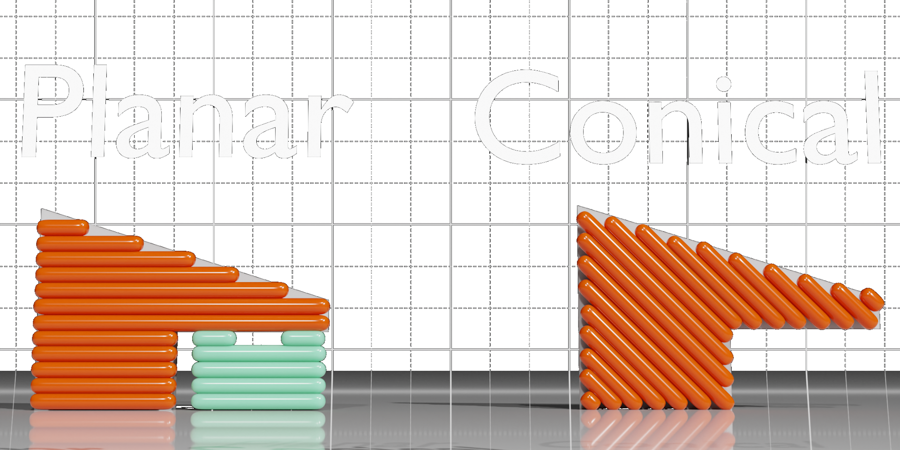
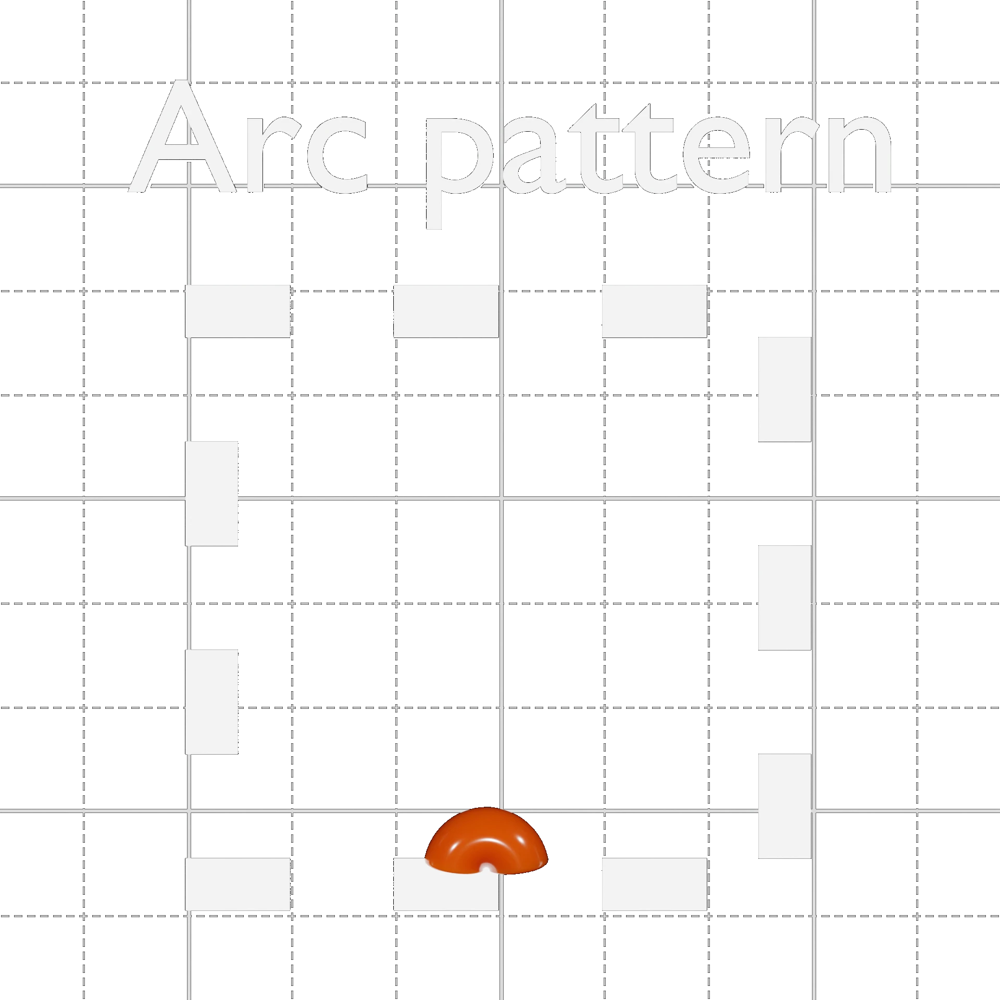

Is There More to Discover?
It's easy to think that slicers are starting to reach their limits. We are seemingly approaching a point where the limiting factor is our hardware. This may be true when it comes to speed but not quality. We still have to deal with the rough underside of overhangs and stair-stepping. But are we sure that this is how far can we push our printers? Have we ventured far enough from the norm of planar slicing to see whether we are actually at the summit? Have we dared to backtrack far enough to realize we took the wrong turn? I think not!
Novel Slicing Strategies
 Our first stop in our journey takes us to conical slicing. A method that is very similar to traditional slicing techniques. The only difference is that it uses a cone instead of a plane. Which enables the printing of horizontal overhangs. Although it can help with overhangs it doesn't eliminate the underlying issue. It instead shifts our overhang capabilities in one direction. As such masking the problem without truly addressing it.
Our first stop in our journey takes us to conical slicing. A method that is very similar to traditional slicing techniques. The only difference is that it uses a cone instead of a plane. Which enables the printing of horizontal overhangs. Although it can help with overhangs it doesn't eliminate the underlying issue. It instead shifts our overhang capabilities in one direction. As such masking the problem without truly addressing it.
 To address this directionality we could fit cones to every overhang. This however complicates the slicing algorithms used. Or the user could assign them manually but this would heavily reduce usability. The next major issue this method has is printer compatibility. It was meant for use with 4-axis printers, where the hotend can rotate around the cone's center. This allows for improved clearance compared to 3-axis printers.
To address this directionality we could fit cones to every overhang. This however complicates the slicing algorithms used. Or the user could assign them manually but this would heavily reduce usability. The next major issue this method has is printer compatibility. It was meant for use with 4-axis printers, where the hotend can rotate around the cone's center. This allows for improved clearance compared to 3-axis printers.
Reducing the cone's slope can improve the required clearance. This inevitably compromises overhang capability, as the two are directly linked. As a result, this method may excel on more complex printers. But my goal is good compatibility with current I3-style printers. To attain supportless slicing we will need to venture further from the norm.
Wait So You DON'T Need Overlap?
The previously mentioned methods used the overlap with the previous layer to act as support to the overhang... but is the issue the lack of overlap or the geometry of the layer? Turns out it may be the latter. This method ventured far from the norm. It attaches plastic to the side of already printed areas. With arc overhangs, we can print horizontal overhangs in any direction on any printer.
 They did this by printing the first layer of an overhang in small circular sections. The sections are filled in a way that the plastic always has something to stick to. This method has some minor flaws, but it also highlights the potential of our printers. However the center of the circles tends to droop down due to excess heating. Another issue is warping. Arc overhangs tend to warp as new layers are printed on top of them. This warping happens because the layers are too thin to support themselves. When the next layer starts shrinking due to cooling, they can easily warp. This can be fixed by adding small supports in the corners of the layer to keep them in place during cooling. But this does add back some extra material. While it's a good approach and should be added to most slicers. For my goals, this isn't good enough.
A completely different approach
If neither method gives us what we want we will just have to look even further from the norm. Which means ditching geometric shapes as the foundation for our layers. This is where, a method I've been experimenting with over the past year comes in, V-slicing. This method manages to incorporate the advantages of arc overhangs and conical slicing. It does this while countering their drawbacks. Granted it has its unique problems which I will have to address. The goal is to develop a slicer that is simple to use while reducing wasted material. This method can potentially print over 90° on a stock Ender 3. This is just theoretical at this point but overhangs up to 90° have already been tested. while also managing to reduce stair stepping if not eliminate it in most cases. This, however, as with everything, comes at a cost. The algorithms used are logically simple but computationally complex.
In Devlog 1, I showcase my results so far. I also explain some of the underlying algorithms I've used so far. I will elaborate on these when we get to their devlogs, as each devlog will explore the algorithms for each layer. My primary goal by doing this is improving 3D printing which is why, as I write a V-Slicing-based slicer called Crystalite, I will also elaborate on all the potential issues I encountered. During these devlogs my ultimate goal is print quality on par with or surpassing Cura. I hope you will join me in that process through future devlogs.